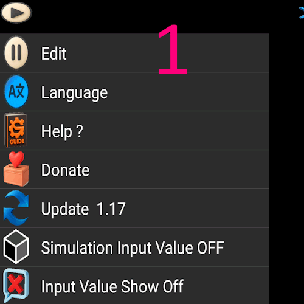
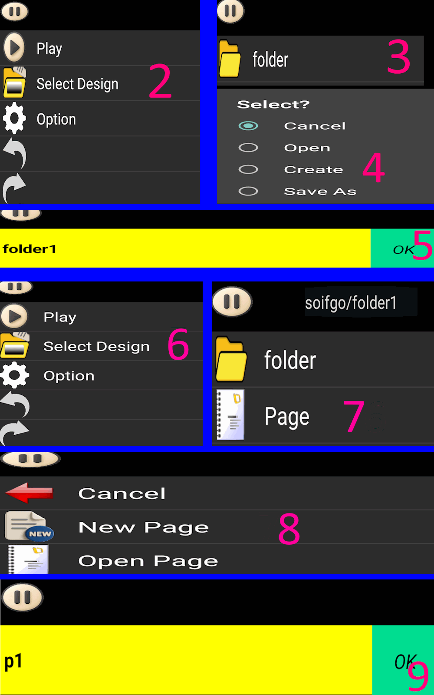
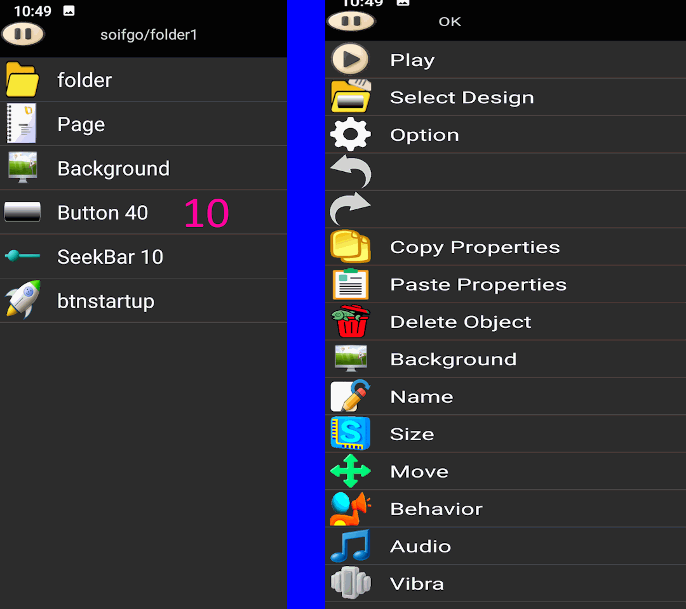

How to Create a Design Page at the Start
Steps
-
Open Play Page
Click the Play icon. A menu appears. Click the first line Edit to go to the edit page.

-
Create a Folder
Click the Edit icon again. Select Design Selection, then click Folder.
Choose Create, name it folder01, and click OK.

-
Create a Page
Click Edit → Design Selection → Page → New Page.
Name it p1 and click OK.
soifgo/folder01/page/p1

Page Features
- Each page can contain up to 40 buttons and 10 sidebars.
- Click a button or bar to edit properties such as size, background, name, and behavior.
- If mistakes happen, use
Undo/Redo in the Edit menu.
- All changes are saved instantly.
- Click the first menu option to return to Play and preview your work.